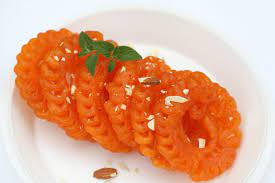
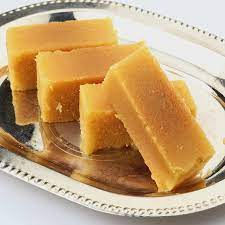
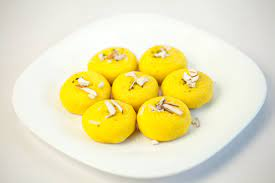
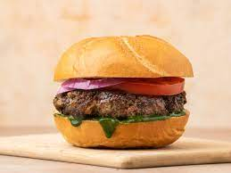
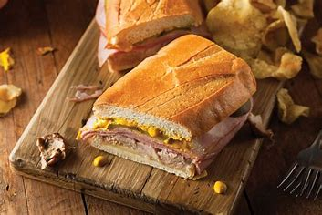
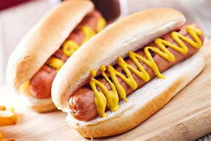
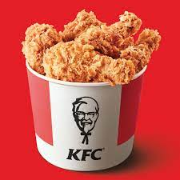
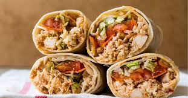

Originally associated with states like Rajasthan and Uttar Pradesh, these ladoos were also easy to store
in the torrid temperatures, and wouldn't go bad for days. Motichoor Ladoo has also found its mention in
ancient and medieval texts of South regions

JALEBI
Jalebi is a spiral shaped traditional Indian sweet made with flour basically mixed with little chickpea
flour and yogurt (even though adding yogurt is not absolutely essential). The batter is fermented and
then deep fried and dipped in sugar syrup
KAJU BURFI
cashew-rich homemade kaju katli are good for heart health as far as you consume them in a healthy way and
avoid overeating. Unsaturated fats and omega 3 fatty acids in cashews help in lowering triglycerides
levels, which help in keeping your heart healthy.

MYSURPARK
Mysore pak is a very sweet dish. Texture: Hard and porous when made with less ghee, soft and dense when
made with generous amount of ghee. Moisture from the sugar syrup escapes as steam through the greased
gram-flour rendering Mysore pak porous.

PEDA
Peda (pronounced [ˈpeːɽa]) or Pera is a sweet dish hailing from the Indian subcontinent. It originated
from Mathura, Uttar Pradesh, India. Usually prepared in thick, semi-soft pieces, its main ingredients
are khoa, sugar and traditional flavorings including cardamom seeds,

BURGER
A hamburger, or simply burger, is a food consisting of fillings—usually a patty of ground A sandwich is a
food typically consisting of vegetables, sliced cheese or meat, placed on or between slices of bread, or
more generally any dish wherein bread serves as a container or wrapper for another food type.meat,
typically beef—placed inside a sliced bun or bread roll.
PIZZA
Depending on the type of crust, the amount of cheese and the toppings used, pizza can rank anywhere from
nutritionally decent to a diet disaster. Even healthy pizzas deliver a good amount of sodium from tomato
sauce and cheese, so if you are watching your salt intake, you should eat with caution.

SANDWICH
sandwich is a food typically consisting of vegetables, sliced cheese or meat, placed on or between slices
of bread, or more generally any dish wherein bread serves as a container or wrapper for another food
type.The modern concept of a sandwich using slices of bread as found within the West can arguably be
traced to 18th-century Europe. However, the use of some kind of bread or bread-like

HOTDOG
A hot dog (less commonly spelled hotdog ) is a food consisting of a grilled or steamed sausage served in
the slit of a partially sliced bun. The term hot dog can also refer to the sausage itself.A hot dog
(less commonly spelled hotdog ) is a food consisting of a grilled or steamed sausage served in the slit
of a partially sliced bun. The term hot dog can also refer to the sausage itself.

KFC
To get to it, download the KFC app and start your order, choosing a location for pickup or delivery. Once
the regular menu comes up, swipe down and hold for about 3 seconds and the secret menu will appear.KFC
(Kentucky Fried Chicken) is an American fast food restaurant chain headquartered in Louisville,
Kentucky, that specializes in fried chicken. It is the world's second-largest restaurant chain (as
measured by sale

WRAP
Experts say that wraps are oftentimes more processed and higher in calories than two slices of
fresh-baked bread. This makes wraps an insane thing to eat, because everyone knows that fresh-baked
bread is delicious and wraps taste like wet cardboar.f you look around, you will find at least one roll
of food wrapping paper in every kitchen. Also called aluminium foil, it is a must-have for wrapping
rotis, sandwiches etc